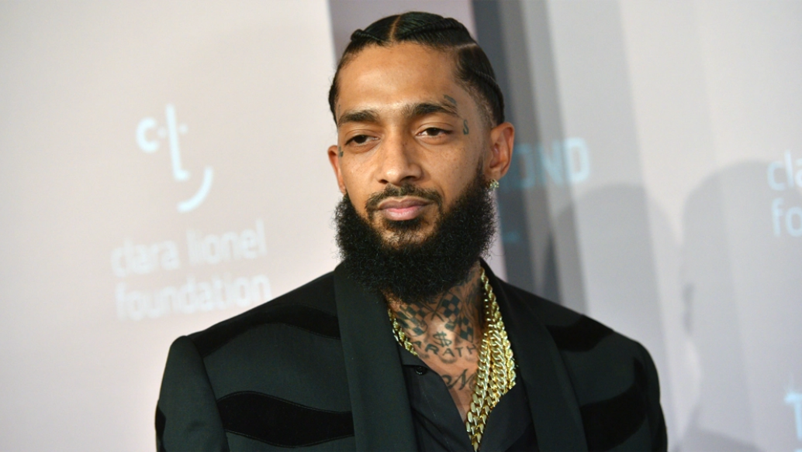

Nipsey Hussle
Rapper Activist Entrepreneur

Hussle was fatally shot outside his store “Marathon Clothing” in South Los Angeles On March 31, 2019,
Hussle was fatally shot outside his store “Marathon Clothing” in South Los Angeles On March 31, 2019,
- 1985 - Born “Ermias Joseph Asghedom” a.k.a “Nipsey Hussle” On August 15
- 2005 - Hussle Independently Reseases First Mixtape “Slauson Boy” Under his own Label
- 2007 - Hussle is Casted in a role for the movie “I Tried”
- 2008 - Hussle Releases Mix-Tape Series “Bullets Ain't Got No Name vol. 1, 2, & 3”
- 2009 - Hussle Signed to both Cinematic Music Group and Epic Records
-
2010 - Hussle is Casted in 3 Movies
“Malice N Wonderland”,”Love Chronicles: Secrets Revealed” & “Caged Animal” - 2012 - Hussle Apperas on the Larry King Show
- 2013 - Hussle Marries Actresss Loren London
- 2013 - Hussle Releases 4 Albums
- 2014 - Hussle Releases a Fifth Album ”Mailbox Money”
- 2016 - Hussle’s Son Kross Asghedom
- 2017 - Hussle Opens Up World's First Clothing “Smart” Store
- 2018 - Hussle is Nominated for Rap Album of The Year Award
-
2019 -Hussle wins :
“Best Male Hip-Hop BET Artist Award”
”Best Rap Performance Grammy Award”
&
“Best Rap/Sung Performance Grammy Award”